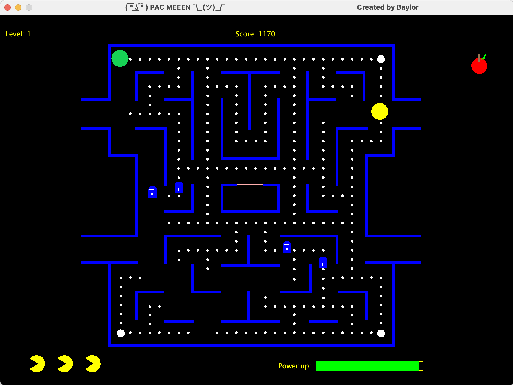
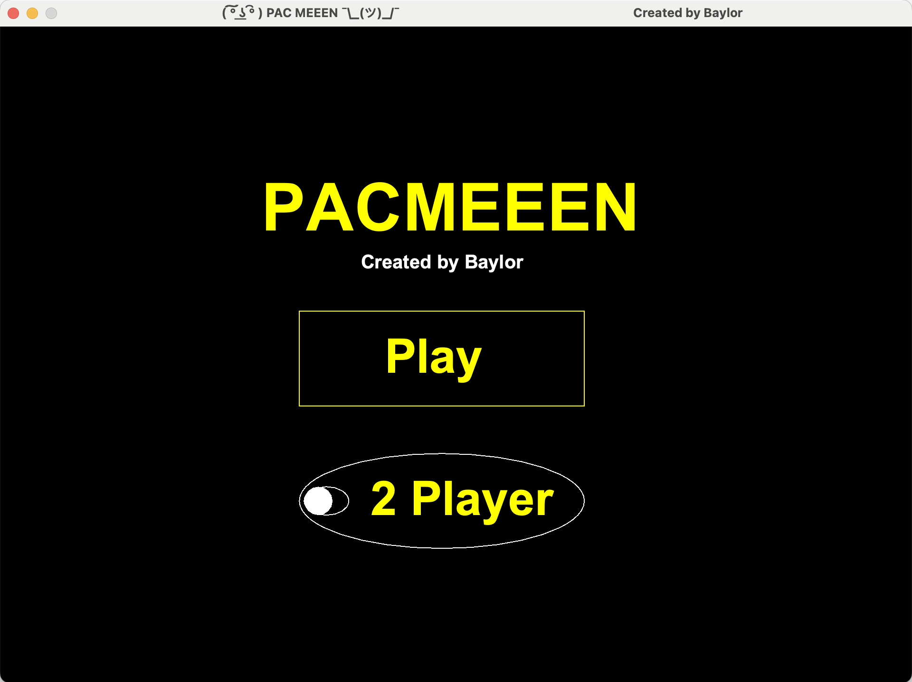
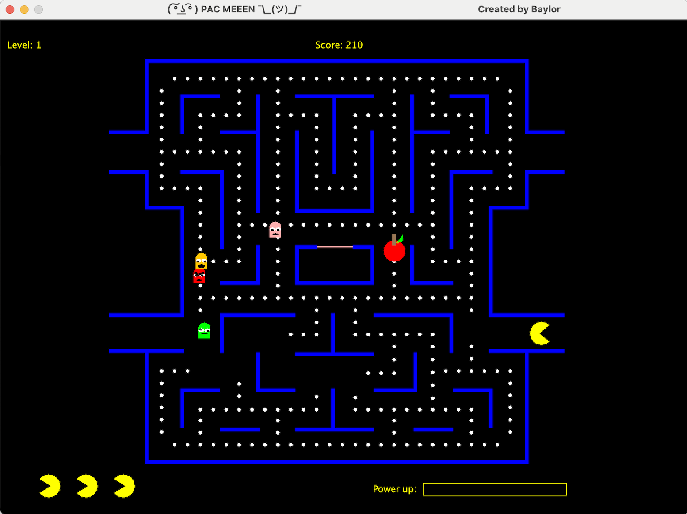

Game development
A familiar game, with room to experiment.
A state-based Java game with two-player and free-movement variations.

The context
A problem worth solving.
Recreating a familiar game offered a way to explore game states, movement and rule variations.
My contribution
What I brought to the work.
Developed a Java Pacman game with two-player mode, free movement and expanded traversal. The original code and feature walkthrough are preserved.
The product
What it makes possible.
Original project / selected screens & walkthrough
The original project imagery and product explanation are retained here. These are historical project materials; current availability may differ.

Since I freehanded everything, the most time-consuming part of the project was creating the GUI. The map took the longest as I had to run the code after each wall to check how it aligned. Additionally, the players posed complexity, especially considering their animation and the fact that they undergo changes when a power-up is collected.

The most intricate aspect of my project involved the creation of 3 of my own distinct tracking algorithms for the ghosts. In essence, the ghost's direction is calculated based on its relative position to the player by adjusting probability values. This algorithm introduced dynamic and responsive behavior.
Where it stands
The work keeps moving.
This project remains part of the earlier-work collection. The original materials show the implementation at that point in time; they are not a claim about current operation.